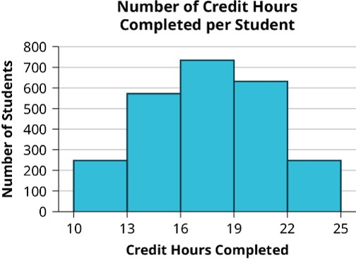

Introduction to Data and Statistics
Statistics are widely used in everyday life, from crime and sports to education and real estate. Whether reading a newspaper, watching TV, or browsing the internet, we often encounter statistical information based on samples. This data helps assess the accuracy of claims to help us all make better and informed decisions. Understanding statistical methods is essential for analyzing information thoughtfully, whether buying a house, managing a budget, or working in fields like economics, business, psychology, biology, or law. This beginning module introduces the fundamentals of statistics including the mindset for being a statistics student, learning the relevant definitions, explaining how data is collected, and how to identify reliable data.
Terminology for Statistics
Before learning about what all is involved in statistics, it is important to introduce a few key words that will be used all throughout our study of statics.
What is Data?
Data is any collections of observations (such as measurements, genders, survey responses, etc.).
Example : Data
- An instructor asks their class how many hours they studied last week and the class responded with various times ranging from 30 mins to 4 hours. All of these "times" given by the students would be considered Data.
- A survey online asks users to identify their favorite fast food restaurant. Two of the selections made are Zaxbys and McDonald's. These two selections are considered data.
What is Statistics?
Statistics is the science of planning studies and experiments, obtaining data, and then organizing, summarizing, presenting, analyzing, interpreting, and drawing conclusions based on the data.
Statistics operates by using studies, surveys, polls, and other data collection tools to gather information from a subset of a larger group, allowing insights about the entire group. This principle reflects the core purpose of statistics and the objective of this course: understanding some larger group by analyzing data from a representative subset.
To further understand this core principle, let's cover a few more key terms that will be used during this course as we progress towards our objective.
The Larger Group
A population is the complete collection of all individuals (scores, people, measurements, and so on) to be studied. The collection is complete in the sense that it includes all of the individuals to be studied.
Individuals often refer to people, but not always. For example, individuals can also refer to animals in a wildlife study, products in a quality control inspection, plants in a botanical experiment, or even stars in an astronomical survey.
If you do collect data from every individual, you have collected a census which is a collection of data from every member of the population.
Consider the example of products in a quality control inspection. As the manufacturer, you want all your products to be free of defects. You have two options: test every product or test a small selection and use the results to evaluate the entire product line. Most manufacturers choose the latter because testing every product is more expensive and may damage or destroy the items being tested.
This example highlights the difference between a census, which involves testing every product, and a sample, which involves testing only a subset.
The Smaller Group
A sample is a subset (or smaller group) of members selected from a population.
Some examples include:
- Political polls study a randomly selected group of households across various states to estimate trends for the entire U.S. population. This approach is more efficient and cost-effective than conducting a full census, as political organizations and journalists lack the resources or time for a true census.
- The professor surveys only 5 of their 30 students about their sleep habits, rather than collecting data from every student.
- The top 8 scores from a competition are sampled to assess whether the overall skill level of the athletes is improving.
Example : Populations vs Samples
Say that a statistics professor is studying the amount of sleep his students get each night and is only able to collect data from ten of his thirty students. What is the sample and what is the population in this scenario?
Solution
The sample in this example will be the 10 pieces of sleep data the professor was able to obtain.
The population that the professor intends to study is ALL his students.
\[ \tag*{\(\blacksquare\)} \]
Example : Populations vs Samples Part 2
Determine the population and sample for the given situation: A Gallup poll is given to all eligible voters, and there are 2.3 million responses.
Solution
The sample in this scenario is the 2.3 million respondents/responses, and the population is all adults eligible to vote.
\[ \tag*{\(\blacksquare\)} \]
Example : Populations vs Samples Part 3
Determine whether the following data is from a population or a sample:
- Part A: The age of every fourth person entering a grocery store.
- Part B: The major for each student at a community college.
Solution
- Part A: This data is from a sample because we are collecting age information for only some of the customers, not all of them.
- Part B: This data is from a population because the community college has information about all students.
\[ \tag*{\(\blacksquare\)} \]
Many times, the difference between a population and a sample is not clear. Be careful with the following examples—they represent common errors in distinguishing a population from a sample.
Example : Populations vs Samples Part 4
Identify the population and sample for this situation: A company surveys 850 of its employees and finds that 520 are satisfied with their job.
Solution
Many people assume the 850 employees is the population because it’s a large number, but this is incorrect. A population includes all members of a group, while specific numbers, like 850, generally refer to a sample.
In this case:
- The 850 employees surveyed represent a sample of the population of all employees at the company.
- The 520 is a statistic calculated from the sample, not the sample itself.
\[ \tag*{\(\blacksquare\)} \]
Example : Populations vs Samples Part 5
An ecologist wants to study the nesting habits of birds in a particular forest. They identify 1800 trees in the northwest region of the forest and randomly select 300 trees to observe. Of those, 120 trees contain nests.
- Part A: What is the population the ecologist wants to study?
- Part B: What is the sample they obtained?
- Part C: About which population can the ecologist draw conclusions?
Solution
- Part A: The ecologist wants to study all trees in the forest where birds might build nests. The 1800 trees is misleading because it only represents one part of the forest.
- Part B: The sample is the 300 trees the ecologist selected to observe because samples include only the individuals from whom data is collected.
- Part C: Since the ecologist only observed trees in the northwest region, they can only make inferences about the population of trees in the northwest region, not the entire forest.
\[ \tag*{\(\blacksquare\)} \]
Example : Populations vs Samples Part 6
We want to study the heights of students at Columbia State Community College so we set up a table in the student resources building to collect data from our fellow students as they come into the building. This college has an enrollment of 2000 students. We obtain the heights of 281 students over a course of three days. For this scenario, identify both the population and the sample as well as some factors preventing us from obtaining a census.
Solution
The population would be all 2000 students that are enrolled in the college as that would be the ideal amount of individuals to collect height data from.The sample is just the 281 student heights we got over the course of the three days.With us collecting data in this manner, this limits us from getting data from students that do not visit the student recourses building. Because of this, we probably do not have a representative sample meaning this sample would not be the best for trying to study the heights of ALL students at ABC College: this data could be used instead to just make inferences about students that use the student resources building.
\[ \tag*{\(\blacksquare\)} \]
Conclusion
Understanding the distinction between populations and samples is fundamental to statistical analysis. Populations represent the entire group under study, while samples are subsets used to make inferences about the population. Although a census provides comprehensive data, it is often impractical for large populations, making sampling a more efficient and feasible approach. Recognizing these differences and correctly identifying populations and samples in various contexts ensures accurate interpretations and better decision-making in studies.
Parameters and Statistics
In statistics, understanding the distinction between key concepts is essential for analyzing data effectively. Two foundational terms, parameter and statistic, play a crucial role in summarizing and interpreting information.
What is a Parameter?
A parameter is a numerical measurement describing some characteristic of a population.
An example of a parameter is the average height of all people living in Nashville, TN, and its surrounding suburbs. While it’s theoretically possible to measure the height of every individual in the area to determine this parameter, doing so would require a complete census, which is impractical. Many people might refuse to participate, and certain groups, such as homeless individuals or undocumented immigrants, can be difficult to locate and include. As a result, although this exact number exists, the inability to conduct a full census means it will likely remain unknown.
This is why we take samples. While we can’t calculate this number for the entire population, we can measure the heights of a subset of individuals who are willing to participate. The average height calculated from this subset is called a statistic, which is used to estimate the unknown parameter.
What is a Statistic?
A statistic is a numerical measurement describing some characteristic of a sample. It is calculated from a sample drawn from some population that is intended to be studied.
Returning to our Nashville example, we could take a random sample of 500 individuals and calculate their average height. If we get an average height of 5 feet 7 inches, then this value is a statistic since it is a value derived from a sample.
Note: To ensure accuracy, the sample should be randomly selected from different neighborhoods and include a diverse mix of ages, genders, ethnicities, and socio-economic backgrounds. This approach can provide a reasonably accurate estimate of the average height of people living in the Nashville area, provided it is free from bias or sampling errors, which we will discuss shortly.
Telling the Difference Between a Parameter and a Statistic
These two terms can be confusing so here is a helpful memory device for sorting out which term goes with what value:
- Parameter refers to a Population (both start with a P)
- Statistic refers to a Sample (both start with a S).
Example : Statistic vs Parameter
For each scenario below, tell if each of the bolded values are a parameter or a statistic. If the value is a statistic, tell what could be changed about the scenario to make the bolded word become a parameter.
- A study of all 2223 passengers aboard the Titanic found that 706 survived when it sank.
- In a large sample of households, the median annual income per household for high school graduates is $19,856 (based on data from the U.S. Census Bureau).
- Among the Senators in the current Congress, 45% are Democrats.
- The author measured the voltage supplied to his home on 40 different days, and the average (mean) value is 123.7 volts.
Solution: Statistic vs Parameter
Here are the solutions to the above example problem:
- The number 706 is a parameter
- The value $19,856 is a statistic. It would be a parameter by removing "sample of households" and adding "all the households in Tennessee" or "every households in the county": putting in wording that indicates it is a complete collection of households.
- The percentage 45% is a parameter
- The value 123.7 is a statistic. This would be a parameter if the "40 different days" was change to "all 365 days of the year" or "all 30 days of this month" to indicate that the voltage measurements are a complete collection.
\[ \tag*{\(\blacksquare\)} \]
Conclusion
Understanding the distinction between parameters and statistics is fundamental in statistical analysis. While parameters describe entire populations, they are often theoretical and difficult to calculate due to practical constraints. Statistics, on the other hand, are calculated from samples and provide a way to estimate these unknown parameters. By carefully designing samples to be representative and minimizing bias, we can make reliable conclusions about populations from data we collect from samples. Using statistics to estimate parameters forms the foundation for much of the work in statistics, allowing us to draw meaningful conclusions from data and apply them to real-world contexts.
Now that we have introduced several of the key terms used in this course, we can explain a little more in-depth what a statistics course entails. This course will cover how to organize and summarize data, a process known as descriptive statistics. Data can be summarized through graphs or by numerical measures which will be discussed in future readings. After some time in the course we will introduce formal methods for drawing conclusions about a population from reliable sample data. This process is known as inferential statistics. Effective data interpretation relies on sound data collection methods and careful analysis. While the course includes numerous mathematical formulas, the focus is primarily on understanding the data rather than performing extensive calculations, which can be handled by calculators or computers. A solid grasp of statistical fundamentals fosters confidence in decision-making.
Classifying Data Types
Understanding data begins with recognizing its classification and the processes used to collect it. Data can broadly be categorized into two classifications with each providing a unique insight into a population or sample allowing for a more targeted analysis of particular aspects. When collecting data it is important to implement an appropriate sampling method so that the data can be used to learn something about the population that it originated. This section will detail data types as well as the common sampling methods used to collect that data.
Data Classification
Data originates from either a population or a sample and can be classified into two main categories: Qualitative Data and Quantitative Data.
What is Qualitative Data?
Qualitative data (or categorical data) categorizes or describes attributes of a population, often using words or letters. Examples include
- hair color (e.g., black, brown)
- blood type (e.g., AB+, O-)
- Zip Codes (e.g., 38401, 49715, 26537)
- car types(e.g., Toyota, Explorer, Jeep)
What is Quantitative Data?
Quantitative data represents numerical values obtained by counting or measuring attributes. Examples include
- weight (pounds, ounces, grams, etc.)
- pulse rate
- number of people or objects
- Discrete data results when the number of possible values is either a finite number or a “countable” number (i.e. the number of possible values is 0, 1, 2, 3, . . . ). Examples might include number of phone calls: 0 calls, 1 call, 2 calls, etc.
- Continuous data results from infinitely many possible values that correspond to some continuous scale that covers a range of values without gaps, interruptions, or jumps. This includes almost measurements of distance, time, volume, temperature, mass, or combinations of any of these. For example, weights like 2.4 grams and 7.5 pounds would be continuous data since the scale they originate from has infinite divisions (i.e. you could get the measurement as precise as possible).
Example : Discrete vs Continuous Data
Determine the correct data type (quantitative or qualitative). For data that is quantitative, indicate whether it is continuous or discrete. Hint: Data that are discrete often start with the words "the number of."
- The number of pairs of shoes you own
- The type of car you drive
- The distance from your home to the nearest grocery store
- The number of classes you take per school year
- The type of calculator you use
- Weights of dogs at an animal shelter
- Number of correct answers on a quiz
- Amount of money you spend at the local Quickmart
Solution: Discrete vs Continuous Data
- Part A: Discrete Quantitative
The number of pairs of shoes you own is countable (e.g., 1 pair, 2 pairs, 3 pairs, etc.), which makes it quantitative and discrete.
- Part B: Qualitative
The type of car you drive (e.g., SUV, sedan, truck) is categorical and cannot be measured or counted, making it qualitative data.
- Part C: Continuous Quantitative
The distance to the nearest grocery store can be measured along a continuous scale (e.g., 1.5 miles, 3.2 miles), allowing for infinite precision, so it is quantitative and continuous.
- Part D: Discrete Quantitative
The number of classes you take per school year is countable (e.g., 4 classes, 5 classes, etc.), so it is quantitative and discrete.
- Part E: Qualitative
The type of calculator you use (e.g., graphing calculator, scientific calculator) is descriptive and categorical, making it qualitative data.
- Part F: Continuous Quantitative
The weights of dogs at an animal shelter can be measured along a continuous scale (e.g., 12.7 pounds, 23.4 pounds) with infinite precision, making this data quantitative and continuous.
- Part G: Discrete Quantitative
The number of correct answers on a quiz is countable (e.g., 1 correct answer, 2 correct answers), so it is quantitative and discrete.
- Part H: Discrete Quantitative
Although the amount of money spent at a store can include decimals (e.g., $5.75), money is not measured on a continuous scale because it is typically limited to two decimal places (cents). Thus, it is quantitative and discrete.
\[ \tag*{\(\blacksquare\)} \]
Example
Consider the following information and table, then answer the questions below.
- Part A: Which information is categorical data?
- Part B: Which information is quantitative data?
| Make/Model | Class | Transmission | Cylinders | City MPG | Highway MPG | Annual Fuel Cost |
|---|---|---|---|---|---|---|
| Chevrolet Corvette | Two-Seater | Manual | 8 | 17 | 29 | $2,650 |
| Nissan Cube | Station Wagon | Manual | 4 | 25 | 30 | $1,850 |
| Ford Fusion | Midsize | Automatic | 4 | 23 | 36 | $1,800 |
| Chevrolet Impala | Large | Automatic | 6 | 18 | 28 | $2,400 |
Solution
- Part A: Categorical data describes attributes or categories and
cannot be measured numerically. From the table, the categorical data includes:
- Make/Model: The names of vehicles, such as "Chevrolet Corvette" or "Nissan Cube."
- Class: The vehicle category, such as "Two-Seater" or "Midsize."
- Transmission: The type of transmission, either "Manual" or "Automatic."
- Cylinders: The number of engine cylinders (e.g., 4, 6, 8) is categorical because it classifies the engine type rather than measuring it.
- Part B: Quantitative data includes numerical values obtained by
counting or measuring. From the table, the quantitative data includes:
- City MPG: The number of miles per gallon in city driving (e.g., 17, 25, 23, etc.).
- Highway MPG: The number of miles per gallon in highway driving (e.g., 29, 30, 36, etc.).
- Annual Fuel Cost: The cost of fuel for one year, measured in dollars (e.g., $2,650, $1,850).
\[ \tag*{\(\blacksquare\)} \]
Example : Type of Data from an Image
The registrar at State University keeps records of the number of credit hours students complete each semester. The data collected are summarized in the histogram. The class boundaries are 10 to less than 13, 13 to less than 16, 16 to less than 19, 19 to less than 22, and 22 to less than 25. What type of data is depicted in the graph below?
Solution: Type of Data from an Image
Since students would be countable (i.e. 0 students, 1 student, 2 students, etc.) this graph depicts data that is Discrete Quantitative.
\[ \tag*{\(\blacksquare\)} \]
Conclusion
Understanding the classification of data and its levels of measurement is essential for conducting accurate and meaningful statistical analysis. By distinguishing between qualitative and quantitative data, and recognizing whether data is discrete or continuous, we can better select appropriate methods for summarizing and analyzing information. Similarly, identifying the level of measurement—nominal, ordinal, interval, or ratio—ensures we apply the correct statistical tools and interpret results accurately. These foundational concepts provide the framework for understanding how data is collected, categorized, and analyzed, paving the way for more advanced statistical techniques.
Levels of Measurement
Statistics involves understanding, analyzing, and interpreting data, and a key component is determining the "level of measurement" of data. Levels of measurement are important because they determine the types of statistical analyses that can be performed and ensure proper interpretation of data. There are four levels of measurement: nominal, ordinal, interval, and ratio. Each builds upon the previous level, providing more information about the data.
Different Levels of Measurement
Nominal Level: Data at this level are categorized without any order. For example, trying to classify people according to their favorite food does not make any sense: putting pizza first and sushi second is not meaningful. Examples might include anything that is qualitative data where there is no inherent order that can be prescribed: gender, eye color, types of fruits, etc.
Ordinal Level: Data are categorized with a meaningful order, but differences between categories are not measurable. Examples include rankings in a competition or survey responses such as "satisfied," "neutral," or "dissatisfied."
Interval Level: Data have meaningful order, measurable differences, but no true zero point. Examples include temperature in Celsius or years on a calendar. Interval level data can be used in calculations, but since there is no true zero point it isn't meaningful to make a ratio. For example: 6 PM isn't twice as big as 3 PM despite there being three hours between the two times of day.
Ratio Level: Data have a meaningful order, measurable differences, and a true zero point, allowing for meaningful ratios. Examples include weight, height, or age.
Example : Levels of Measurement
Classify the following scenarios by their level of measurement:
- Types of cars (e.g., SUV, sedan, truck).
- The ranking of runners in a race.
- Temperature readings in Fahrenheit.
- The time it takes for participants to complete a task, measured in seconds.
Solution
- Nominal: Types of cars are categorized without order.
- Ordinal: Rankings in a race indicate an order but do not provide measurable differences between positions.
- Interval: Fahrenheit temperatures provide measurable differences but lack a true zero.
- Ratio: Time in seconds includes meaningful differences and a true zero, allowing for ratios.
\[ \tag*{\(\blacksquare\)} \]
Data Collection and Bias
Effective data collection is essential for reliable statistical studies. Observational studies measure characteristics without intervention, while experiments impose treatments to observe their effects. Key techniques like randomization, replication, and blinding reduce bias and improve accuracy. Understanding and addressing sources of bias, such as response bias and nonresponse, ensures valid and meaningful results. Data Collection MethodsWhat is an Observational Study?
In an observational study, a researcher observes and measures characteristics but does not change any existing conditions.
What is an Experiment and a Treatment?
In an experiment, a researcher imposes a change in some preexisting condition, called a treatment, onto a sample of a population and measures their response to that change.
What is a Control Group?
A control group is a sample that receives no treatment and is used as a baseline to compare other samples to.
Example
Determine whether the study is observational or an experiment. Explain your reasoning.
- Part A: In a survey of 1033 US adults, 51% of respondents said that US presidents should release all medical information that might affect their ability to serve.
- Part B: Researchers demonstrated that adults using an intensive program to lower systolic blood pressure to less than 120 millimeters of mercury reduce the risk of death from all causes by 27%.
Solution
- Part A: Observational Study: The researchers surveyed respondents and recorded their opinions without imposing any changes or treatments. No variables were manipulated.
- Part B: Experiment: The researchers imposed a treatment by implementing an intensive program to lower systolic blood pressure. They then measured the participants' responses (reduction in the risk of death).
\[ \tag*{\(\blacksquare\)} \]
Elements of a Well-Designed Study
What is Replication?
Replication: Assign enough individuals to each treatment to reduce the variation in the results. This ensures that similar experiments conducted under the same conditions will yield similar results.
For example, a medical researcher is testing the effectiveness of a new drug to lower blood pressure. To ensure reliable results, the researcher assigns 500 participants to the treatment group (receiving the drug) and 500 participants to the control group (receiving a placebo). By assigning a large number of participants to each group, the researcher reduces the variability in results that might occur due to chance or individual differences. Replication ensures that the outcomes are consistent and reproducible if the experiment is repeated under the same conditions.
We will learn in Chapter 6 why larger sample sizes lead to less variation.
What is Randomization?
Randomization: Select subjects randomly so that variations in results occur purely by chance, not external factors.
For example, in a clinical trial testing a pain medication, 200 participants are randomly assigned to two groups: 100 receive the medication, and 100 receive a placebo. Randomization ensures that differences between the groups are due to the treatment and not factors like age or health.
As the study is replicated, probability theory, the subject of Chapter 4, predicts that the effects of random variation diminish. Consistently similar results across replications increase confidence that the findings reflect the true population characteristics
Example
In statistics, it is often said that a single data study doesn't prove a result. Explain why this is true.
Solution
A single study does not prove a result because of the following issues.
- Any single study is subject to random variation due to chance, as a sample may not perfectly represent the population. This error can cause the results to differ from the true population characteristics purely by chance.
- Without replication, it is difficult to determine whether the observed result is reliable or simply due to random variation. A single study cannot confirm the consistency of findings across repeated experiments.
\[ \tag*{\(\blacksquare\)} \]
What is Blinding?
Blinding ensures that subjects do not know whether they are receiving a placebo or an actual treatment. This reduces the risk of bias caused by participants' expectations influencing the results.
What is a Single-Blind Experiment?
In a single-blind experiment, the participants do not know whether they are receiving the treatment or a placebo, but the researchers administering the treatment do know.
For example, in a clinical trial testing a new allergy medication, participants are randomly divided into two groups. One group receives the allergy medication, and the other group receives a placebo. The participants do not know which group they are in, but the researchers administering the medication do. This prevents participants' expectations from influencing the results, though it still leaves room for potential researcher bias.
What is a Double-Blind Experiment?
In a double-blind experiment, neither the participants nor the researchers administering the treatment know who is receiving the treatment or the placebo.
For example, in the same allergy medication trial, participants are randomly divided into two groups. One group receives the allergy medication, and the other group receives a placebo. Neither the participants nor the researchers administering the treatment know who is in which group. This eliminates both participant and researcher bias, ensuring that the results are as unbiased as possible.
Example
An experiment that claimed to show that meditation reduces anxiety proceeded as follows:
The experimenter interviewed the subjects and rated their level of anxiety. Then the subjects were randomly assigned to two groups. The experimenter taught one group how to meditate, and they meditated daily for a month. The other group was simply told to relax more. At the end of the month, the experimenter interviewed all the subjects again and rated their anxiety levels. The meditation group now had less anxiety.
Psychologists said that the results were suspect because the ratings were not blind. Explain what this means and show how the lack of blindness could introduce bias into the reported results.
Solution
The psychologists’ concern about the lack of blindness refers to the fact that the experimenter, who rated the subjects’ anxiety levels both before and after the experiment, knew which group each subject belonged to (meditation or relaxation). This lack of blindness could introduce bias in the following ways:
- The experimenter might have unconsciously expected the meditation group to show greater improvement, leading them to rate that group’s anxiety levels more favorably.
- Since the experimenter knew the treatment assignments, their personal beliefs about meditation's effectiveness could have influenced their ratings, even if unintentionally.
To reduce bias, the experimenter could have implemented a double-blind procedure. In a double-blind experiment, the experimenter conducting the interviews would not know which group each subject was in. This would ensure that the ratings are based solely on the subjects’ behavior and responses, without being influenced by the experimenter’s expectations.
By using proper blinding, the anxiety ratings would be less likely to reflect the experimenter’s or subjects’ biases, leading to more reliable and unbiased results.
Common Sources of Bias in Statistical Study
Accurate data collection is the foundation of any statistical analysis, providing the raw information needed to draw meaningful conclusions about populations. However, the process of collecting data is not without its challenges. This section explores key aspects of data collection and common sources of bias, including response bias, wording effects, and nonresponse. By understanding these challenges, we can design better methods for collecting high-quality data and minimize the impact of bias on our results.
What is Response Bias?
Response bias occurs when the behavior of the respondent or the interviewer influences the response that the respondent gives. This can result in inaccurate or misleading data that does not accurately represent the population being studied.
Example
When asked a question such as, "Did you vote in the last presidential election?", many people will indicate they voted when in reality they did not. Why do you think people lied, and why is this an example of response bias?
Solution
Many people lie in response to this question because voting is socially desirable. People may feel pressure to give an answer that aligns with societal expectations, even if it is not truthful. This is an example of response bias because the respondent’s behavior (lying to conform to expectations) influences the data, making it inaccurate.
\[ \tag*{\(\blacksquare\)} \]
What are Wording Effects?
Wording effects occur when the phrasing, choice of words, or order in which questions are asked affects the responses collected. Even slight changes in how a question is framed can result in significantly different answers, which can introduce bias into the data.
Example
Which question do you think people agreed more with?
- Question A: Is the government spending too much on assistance to the poor?
- Question B: Is the government spending too much on welfare?
Discuss how the choice of words could affect how people respond to these questions.
Solution
People are more likely to agree with Question A because the phrase "assistance to the poor" evokes a sense of helping those in need. In contrast, the term "welfare" may carry negative connotations for some people, as it is often associated with misuse or dependency. This demonstrates how subtle changes in wording can influence how respondents perceive and answer questions, a key example of wording effects.
\[ \tag*{\(\blacksquare\)} \]
What is Nonresponse?
Nonresponse occurs when a respondent refuses to participate or cannot be reached. This results in missing data and can skew the results if the nonrespondents differ systematically from those who do respond.
Example
An opinion poll calls 2000 randomly chosen households and asks an adult member of the household, "How many movies have you watched in a movie theater in the last 12 months?" Only 831 people responded.
- What is the rate of nonresponse?
- Why do you think the nonresponse rate was so high?
Solution
The total number of households contacted was 2000, and the number of responses was 831. To calculate the rate of nonresponse:
\[ \text{Nonresponse Rate} = \dfrac{\text{{Nonresponses}}}{\text{Total Households}} = \dfrac{2000 - 831}{{2000}} = \dfrac{{1169}}{{2000}} = 0.5845 \text{ (or 58.45%)}. \]
The nonresponse rate is 58.45%, which is quite high. The likely reasons include:
- People may not answer calls from unknown numbers or may be busy when called.
- Some people may not feel comfortable sharing personal information, such as how often they go to the movies.
- The question may not seem relevant to everyone, leading to disengagement.
\[ \tag*{\(\blacksquare\)} \]
Conclusion
Accurate statistical results rely on well-designed studies that minimize bias and random variation. Incorporating replication, randomization, and blinding enhances reliability, while addressing issues like response bias, wording effects, and nonresponse improves data quality. Proactively identifying and mitigating these challenges during study design ensures results are both valid and reproducible, forming a strong basis for meaningful analysis and decision-making.
Sampling Techniques and Errors
Sampling techniques are essential for collecting data efficiently when surveying an entire population is impractical or too costly. Random sampling methods aim to ensure that samples represent the population by reducing bias and allowing for accurate generalizations. Nonrandom sampling methods, while simpler, often introduce bias and limit the reliability of conclusions. This section explores common sampling techniques, errors that can arise during sampling, and methods to mitigate these issues.
Sampling Techniques
Sampling is used when gathering data from an entire population is impractical or too expensive. A sample should represent the population's characteristics, and random sampling methods help achieve this.
What are the Common Sampling Techniques?
These are not an exhaustive list, just the most common types you are likely to encounter.
Random Sampling Techniques
- Simple Random Sampling: Every individual in the population has an equal chance of being selected, ensuring that all samples of the same size are equally likely.
- Stratified Sampling: Divide the population into groups (strata) and take a proportionate random sample from each group. For instance, sample students from various departments to represent a college population.
- Cluster Sampling: Divide the population into clusters, then randomly select some clusters and include all members from those clusters in the sample. For example, randomly select departments in a college and survey all their students.
- Systematic Sampling: Randomly select a starting point and pick every nth member from a population list. For example, choose every 50th name in a phone book for a survey
Non-Random Sampling Techniques
- Convenience Sampling: Individuals are chosen based on accessibility and ease rather than randomness. For example, Surveying the first 20 people entering a grocery store about their shopping habits.
Nonrandom sampling methods, such as convenience sampling, should generally be avoided as they can lead to biased results. For example, surveying the first 20 customers entering a coffee shop might overrepresent certain groups, such as early risers or individuals with flexible schedules, while excluding others, like night-shift workers.
Random sampling methods aim to reduce bias and ensure representativeness by giving all individuals an equal chance of selection. However, even random sampling is subject to random sampling error, where chance variations may cause the sample to differ from the population. Larger sample sizes reduce this error, improving the reliability of the results. Researchers must also address nonrandom sampling errors like undercoverage, nonresponse, and volunteer response bias, as these can further skew results. Well will discussing these sampling errors shortly.
For now, we want to focus on identifying the common types of sampling techniques.
Example
A study intends to determine the average tuition paid by Tennessee Technological University undergraduate students per semester. Identify the sampling method used in each scenario:
- Part A: Organize students by year (e.g., first-year, sophomore), then select 25 from each.
- Part B: Use a random number generator to select one student, then pick every 50th student until 75 students are included.
- Part C: Select 75 students completely at random, with equal probability for all.
- Part D: Randomly pick two years (e.g., first-year and senior), and survey all students in those years.
- Part E: Survey the first 100 students encountered in front of the library on a specific day.
Solution: Identify Sampling Techniques
- Part A: Stratified Sampling: Students are grouped by year and sampled proportionally.
- Part B: Systematic Sampling: A starting point is randomly selected, and every 50th student is chosen.
- Part C: Simple Random Sampling: All students have an equal probability of selection.
- Part D: Cluster Sampling: Entire years are selected, and all students in those years are included.
- Part E: Convenience Sampling: Students are chosen based on availability, leading to potential bias.
\[ \tag*{\(\blacksquare\)} \]
Sampling Errors
What is a Random Sampling Error?
A random sampling error occurs when there is a discrepancy between a sample result and the true population result. This type of error arises purely due to chance, as a sample is only a subset of the population and may not perfectly represent it. For example, if a random sample of 50 students is drawn from a school of 1,000, the sample mean test score might differ slightly from the population mean simply by chance.
Key Point: Random sampling error is unavoidable in any sampling process but can be minimized by increasing the sample size.
What is a Nonrandom Sampling Error?
There are three important types of nonrandom sampling errors: undercoverage, nonresponse, and volunteer response.
- What is Undercoverage?Undercoverage occurs when some groups in the
population are systematically excluded from the sampling process, making the sample
unrepresentative of the entire population.
ExampleA survey conducted by randomly calling landline phone numbers will exclude people who only use cell phones, such as younger adults, leading to biased results.
- What is Nonresponse?Nonresponse occurs when a portion of the
selected sample does not participate in the study, and their responses may differ
systematically from those who do respond.
ExampleIn a mail survey asking about personal finances, people who feel uncomfortable sharing financial information may choose not to respond, skewing the results toward those who are more open about their finances.
- What is a Volunteer Response? Volunteer response occurs when
participants self-select into the sample rather than being randomly chosen, often
leading to an overrepresentation of individuals with strong opinions.
ExampleAn online poll about a controversial policy is likely to attract participants who feel strongly for or against the policy, while those who are neutral or indifferent are less likely to respond.
Example
A university is conducting a study to understand student preferences for campus dining options. The following scenarios describe how data was collected. Identify the type of nonrandom sampling error for each part and explain your reasoning.
- Part A: The university posts a survey link on its social media pages and encourages students to share their opinions. Most responses come from students who are either very satisfied or very dissatisfied with campus dining options.
- Part B: The university randomly emails 1,000 students asking them to complete the survey. Only 250 students respond, and many of the responses are from students who frequently use campus dining services.
- Part C: The university conducts the survey at a single campus dining hall during lunchtime. Students who do not use the dining hall or eat lunch on campus are excluded from the sample.
Solution
- Part A: Volunteer Response
The survey link was shared publicly, allowing students to self-select into the sample. This leads to volunteer response bias, as students with strong opinions are more likely to participate, while those with neutral opinions are underrepresented.
- Part B: Nonresponse
Out of the 1,000 students contacted, only 250 responded, creating nonresponse bias. The opinions of nonrespondents may differ systematically from those of respondents, particularly since frequent diners are overrepresented in the responses.
- Part C: Undercoverage
The survey was conducted at a single dining hall during lunchtime, excluding students who do not use the dining hall or eat lunch on campus. This undercoverage results in a sample that is not representative of the entire student population.
\[ \tag*{\(\blacksquare\)} \]
What is a Non-sampling Error?
A non-sampling error is caused by human error or flaws in the data collection process. These errors can occur regardless of how the sample is chosen. Examples include mistyping data into a computer, misinterpreting survey questions, or using faulty measuring instruments.
Key Point: Non-sampling errors can often be reduced by careful planning, training, and implementing quality control measures during data collection and entry.
Conclusion
Effective sampling is key to obtaining reliable and meaningful data. Random sampling methods, like stratified and systematic sampling, reduce bias and provide representative samples, while nonrandom methods, such as convenience sampling, often produce unreliable results. Identifying and addressing common sampling errors, including undercoverage and nonresponse, further improves the quality of data collection. By carefully selecting sampling techniques and minimizing errors, researchers can ensure their findings are accurate and applicable.
Experimental Design
Experimental design ensures reliable and unbiased results by structuring studies to isolate treatment effects and control variability. This section covers three key designs—completely randomized, randomized block, and matched pairs.
Types of Designs
What is a Completely Randomized Design?
A completely randomized design assigns treatments to subjects entirely at random, without grouping or blocking. This design works well when the subjects are similar and there are no additional variables that need to be controlled.
Example: A clinical trial randomly assigns participants to receive one of three medications to treat high blood pressure. Results are compared across all participants.
Example
Many utility companies have introduced programs to encourage energy conservation among their customers. A particular company has three options:
- Place a small digital display in households to show current electricity usage.
- Give customers a chart and information about monitoring their use from the outside meter.
- Use a control group that receives general information about conserving energy but no tools to monitor their use.
Design a flowchart that models this experiment.
Solution
The experiment can be modeled using a completely randomized design as follows.
First, we have a block to represent all the individuals in the sample. Next, we
randomly sort the individuals into three groups:
one group for each treatment and one placebo group. We label the groups 1, 2, and 3.
We draw
an arrow from our initial block to each of the three groups, as follows.
Next, we
randomly sort the individuals into three groups:
one group for each treatment and one placebo group. We label the groups 1, 2, and 3.
We draw
an arrow from our initial block to each of the three groups, as follows. Next, we add a block for each treatment and one for the
placebo.
We assign the treatments to the groups at random. In the diagram, we then draw
an
arrow from the group to the treatment it receives. Typically, the treatment
block is
draw to the right of the group block it is assigned to, as demonstrated in the
following
image.
Next, we add a block for each treatment and one for the
placebo.
We assign the treatments to the groups at random. In the diagram, we then draw
an
arrow from the group to the treatment it receives. Typically, the treatment
block is
draw to the right of the group block it is assigned to, as demonstrated in the
following
image.
Finally, we add a single block at the end indicating that the data is collected, and
the
results from all the treatment and placebo groups should be compared. In the
flow
chart, we indicate this by drawing an arrow from each treatment to the Compare
Results box,
and our flowchart is complete..png "Added a block for comparing all the results.")
\[ \tag*{\(\blacksquare\)} \]
What is a Randomized Block Design?
A randomized block design groups subjects into blocks based on shared characteristics or variables that may influence the results. Treatments are then randomly assigned within each block, and comparisons are made within the blocks.
Example: In a weight loss study, participants are grouped into blocks by gender (e.g., male and female). Within each block, participants are randomly assigned to different diet plans, and results are compared separately for males and females.
Example
A cosmetics company wants to compare the effectiveness of two facial creams: Cream A, which claims to reduce wrinkles, and Cream B, which claims to improve skin hydration. The company recruits 40 participants and divides them into blocks based on skin type: oily, dry, combination, and sensitive. Each block contains 10 participants. Within each block, participants are randomly assigned to use either Cream A or Cream B for four weeks, and their skin condition is evaluated at the end of the study.
Design a diagram that models this experiment.
Solution
This experiment uses a randomized block design, and the flowchart can be designed as follows.
As before, we start with a block to represent all the individuals in the sample.
 Next,
we add in blocks for the different skin types since the creams may affect different
skin
types differently. We draw an arrow from the sample to each of the different skin
types.
Next,
we add in blocks for the different skin types since the creams may affect different
skin
types differently. We draw an arrow from the sample to each of the different skin
types. Now, we
treat each block as its own SRS, and assign members in each block into one of two
groups, as
shown below.
Now, we
treat each block as its own SRS, and assign members in each block into one of two
groups, as
shown below. Since we are treating each block as its own SRS, we'll
assign each group within a block one of the two creams.
Since we are treating each block as its own SRS, we'll
assign each group within a block one of the two creams. The whole point of the block design is to
account for
the different types of skin. So, when we get to the compare results step, we only
compare
results within each block. This ensures that any differences observed are due
to the
treatment and not the characteristics defining the blocks.
The whole point of the block design is to
account for
the different types of skin. So, when we get to the compare results step, we only
compare
results within each block. This ensures that any differences observed are due
to the
treatment and not the characteristics defining the blocks.
The final flowchart shown below.

\[ \tag*{\(\blacksquare\)} \]
What is a Matched Pairs Design?
A matched pairs design is a special case of the randomized block design where subjects are paired or matched in some way. This design is used to compare two treatments.
- Version 1: Pair two individuals based on shared characteristics.
Randomly assign one individual in each pair to receive the first treatment, and the
other to receive the second treatment. Compare results within each pair.
Example: Two participants of similar age and fitness level are paired. One is assigned to a new exercise routine, and the other follows a standard routine. Their progress is compared after four weeks.
- Version 2: Use the same individual for both treatments. Assign one of
the treatments to the individual at random, and once the experiment is concluded, apply
the other treatment at a later time under similar conditions. Compare the results for
that individual.
Example: A participant tests two different types of running shoes by running a set distance with each pair on different days. Their times are compared to determine which shoe performs better.
Example
Researchers are studying the effect of two different dashboard layouts on driver reaction times during sudden stops. The two layouts are:
- Layout A: A traditional dashboard with analog gauges.
- Layout B: A modern digital dashboard with heads-up display features.
Each participant is randomly assigned to use one dashboard layout while completing a driving simulation. After a break, the same participants repeat the simulation with the other dashboard layout under similar conditions. Reaction times are measured during each simulation.
Describe and diagram a matched pairs experiment to determine if the modern dashboard increases safety.
Solution
This is a matched-pairs design (Version 2) because each participant serves as their own control by testing both dashboard layouts. As before, we start off with the random sample.
 Next, assign the participants into one of two
groups.
Next, assign the participants into one of two
groups. Next, randomly assign one of the two treatments to each
group.
Next, randomly assign one of the two treatments to each
group. After a period of time has passed and under similar
conditions, the
groups are given the other treatment.
After a period of time has passed and under similar
conditions, the
groups are given the other treatment. Finally, you compute the difference in results
between
the two treatments, and compare all the differences among the participants.
Finally, you compute the difference in results
between
the two treatments, and compare all the differences among the participants.
\[ \tag*{\(\blacksquare\)} \]
Conclusion
Good experimental design minimizes bias, controls variability, and ensures valid comparisons. Completely randomized designs work for homogeneous groups, randomized block designs account for shared characteristics, and matched pairs designs allow detailed within-subject or paired comparisons. Proper design leads to meaningful and reliable results.